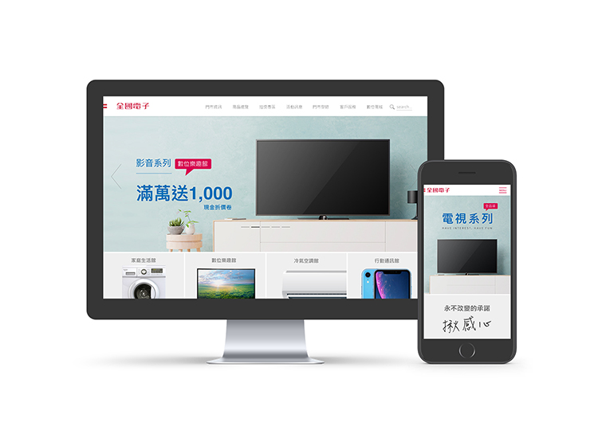

E-LIFE MAILL CORPORATION WEBSITE DESIGN
全國電子官方網頁設計執行
全國電子
・網站介面與流程UI/UX
・前端設計html/css/JavaScript
・嚮應式網頁RWD
・後端內容上下架後台
・型錄電子書建置
造訪官網：
https://web.elifemall.com.tw/zh/index.php
SHARE ON

全國電子為本土經營的45年老品牌，廣告台詞「足感心A」深植消費者的心。
此次伯納協助全國電子，將官網全面重新打造翻新，經過評估，我們發現原先舊的官網問題在於資料過於繁雜，造成瀏覽率不高。經過多次來回討論與協調，我們釐清資訊，將首頁簡化，並將所有內容重新劃分，整體設計也以簡單大方的色塊呈現，使瀏覽者能夠閱讀起來更為方便、舒適。新網站上線後，也帶來更高的瀏覽率。
造訪官網：https://web.elifemall.com.tw/zh/index.php